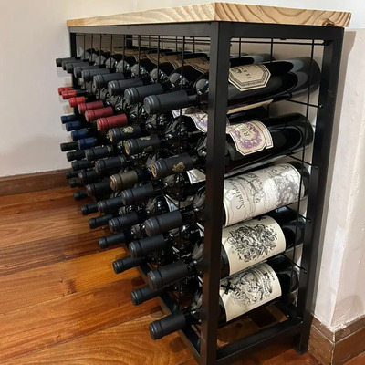
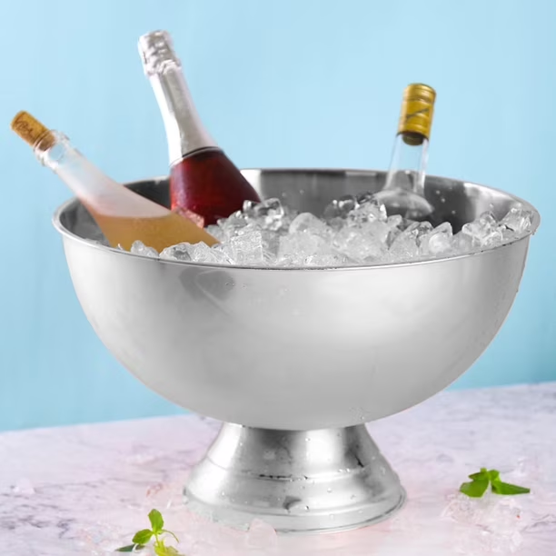
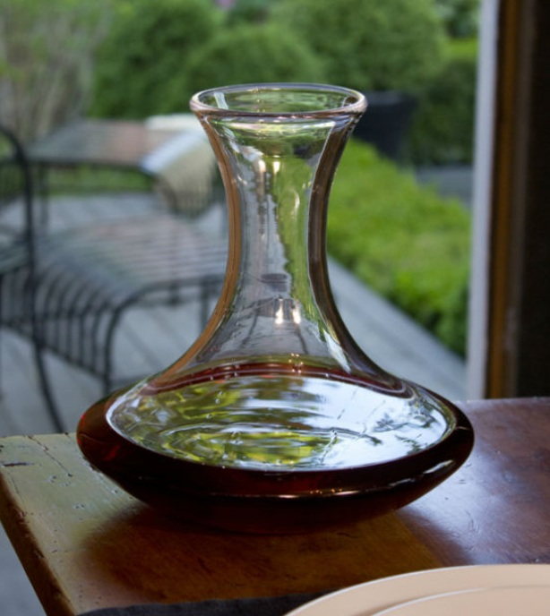
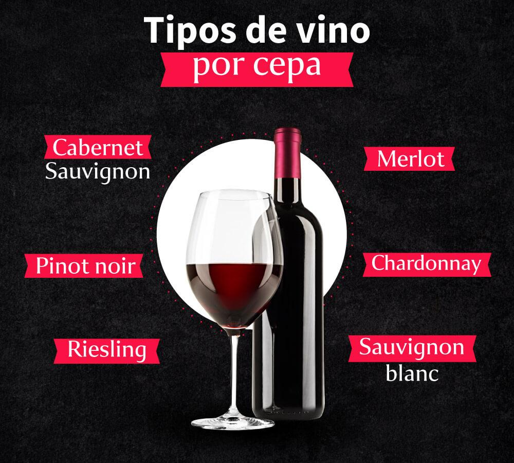

Nuestra intención es que estas guías sirvan como punto de partida. El sabor del vino puede ser modificado por la forma que lo trates. Cada botella es diferente, por lo cual se deben tomar estos parámetros como pautas, no como leyes absolutas.
Pequeños tips
* ¿Necesitas enfriar una botella rápidamente? Envuélvela en un paño de cocina húmedo y métela en el congelador durante 10-15 minutos. La humedad acelera el proceso de enfriamiento. ¡Pero no te olvides de ella! (A todos nos ha pasado que una botella explota).
* ¿Quieres que tu vino dure más tiempo abierto? Guarda la botella en la heladera y utiliza un tapón de vacío para extraer el aire. Esto ralentiza el proceso de oxidación y mantiene el sabor por más tiempo.
* Este es uno de mis mejores consejos y trucos para el vino. ¿Tienes una botella barata que sabe un poco astringente o áspera? Viértela en una jarra o en un recipiente ancho y grande, como una jarra o un jarrón, y déjala respirar durante 30 minutos. Esto suaviza los taninos y ayuda a que los sabores se desarrollen.
Pequeños tips
Las botellas de vino selladas con corcho siempre deben guardarse en posición horizontal.
Ahora si, a experimentar!

ENFRIEMOS EL VINO

OXIGENAR EL VINO
